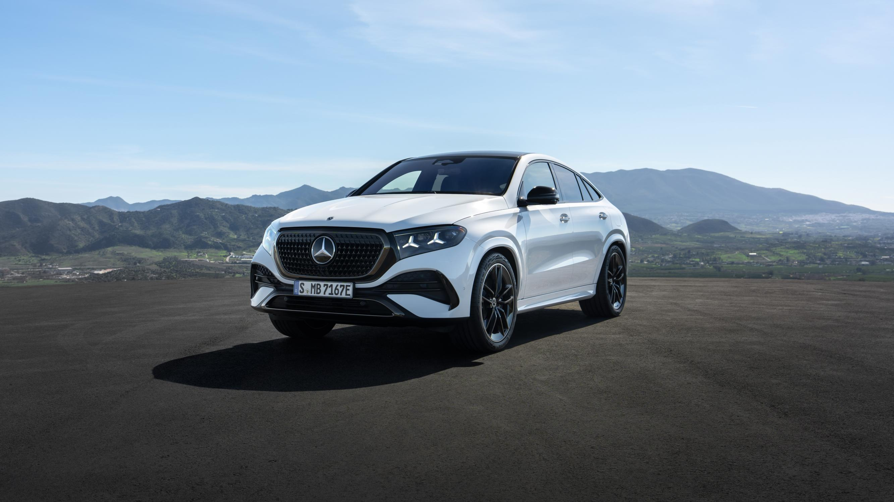
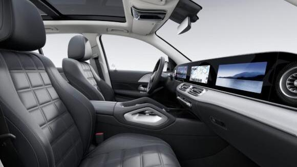
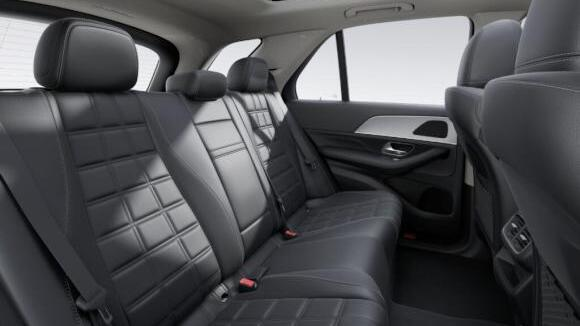
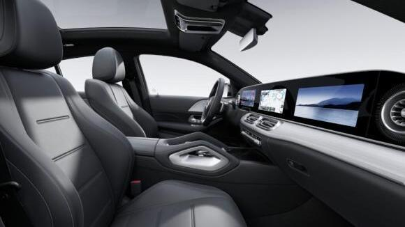

THE NEW GLE · MY27
당신의 다음 GLE.
SUV & Coupé.
여유로운 SUV, 개성 있는 쿠페.
두 가지 GLE의 옵션과 색상을 살펴보세요.
11월 말 출시 예상 · 가격 미정
사전계약 상담 ↗ THE NEW GLE
THE NEW GLE이미지는 모델의 디자인을 보여주는 예시이며, 휠·외장 패키지 등은 선택한 국내 사양과 다를 수 있습니다.
CHOOSE YOUR SUV
GLE의 라인업을 살펴보세요.
모델별 옵션과 색상을 한곳에서 보고, 비교 챕터에서는 차이를 나란히 확인하세요.
 GLE
GLEGLE 450 4MATIC AMG Line
SUV의 여유, 가족의 일상에.
- AMG 바디스타일링 · 21인치 AMG 휠
- 가죽 시트 · 뒷좌석 전동 조절
- 에어매틱 · 파노라믹 선루프
모델 챕터 보기 ↗
GLE COUPÉGLE 450 4MATIC Coupé
쿠페의 실루엣, 선명한 개성.
- AMG 바디스타일링 · 21인치 AMG 휠
- 나파 가죽 · 스포츠 시트 패키지
- 에어매틱 · 파노라믹 선루프
모델 챕터 보기 ↗사진은 디자인 예시입니다. 국내 기본 휠과 옵션 구성은 각 모델 설명을 확인해 주세요.
SUV · AMG Line · 이미지의 휠·색상은 선택 구성에 따라 달라질 수 있습니다.이 모델의 구성
- 기본 휠
- 21인치 AMG 5 트윈 스포크
- 시트 소재
- 가죽
- 뒷좌석
- 전동 조절 · 열선
- 실내 색상
- 3가지
11월 말 출시 예상 · 가격 미정
GLE SUV 사전계약 상담 ↗
OPTIONS
GLE SUV의 주요 옵션
모델별 구성
- AMG 바디스타일링 · 21인치 AMG 5 트윈 스포크 휠
- 가죽 시트 · 뒷좌석 전동 조절과 열선
- 스포츠 나파 가죽 스티어링 휠 · 열선
- 앤트러사이트 오픈 포어 오크 우드 트림
디스플레이·연결MBUX 슈퍼스크린
- MB.OS 기반 4세대 MBUX
- 12.3인치 화면 3개 · 조수석 디스플레이
- 증강현실 헤드업 디스플레이 · 내비게이션
- 스마트폰 통합 패키지 · 앞좌석 무선 충전
승차감·정숙성에어매틱과 어쿠스틱 컴포트
- 에어매틱 에어 서스펜션
- 어댑티브 댐핑 시스템
- 열·소음 차단 라미네이티드 글래스
- 어쿠스틱 컴포트 패키지
주행·주차 보조MB.DRIVE 어시스트
- 브레이크 어시스트 · 차선 이탈 방지
- 사각지대 어시스트 플러스
- 360° 카메라 · 파크트로닉
- 디지털 라이트 · 상향등 어시스트
- 발광 라디에이터 그릴
시트·온도 조절앞좌석부터 뒷좌석까지
- 앞좌석 열선·통풍·메모리
- 뒷좌석 열선
- 열선 스티어링 휠
- 자동 온도 조절 시스템
실내 분위기부메스터 3D 서라운드 사운드
- 부메스터 3D 서라운드 사운드 시스템
- 파노라믹 선루프 · 앰비언트 라이트
- 앤트러사이트 오픈 포어 오크 우드 트림
- 나파 가죽 스티어링 휠
일상 편의문을 닫는 순간까지 편안하게
- 파워 클로징 · 전동 트렁크
- 매직 비전 컨트롤
- 뒷좌석 사이드 에어백
 GLE SUV · MBUX 슈퍼스크린과 실내 디자인
GLE SUV · MBUX 슈퍼스크린과 실내 디자인휠 디자인
22인치 휠은 8월 초기 생산분에 한정된 유료 옵션입니다. 선택 가능한 휠과 추가 비용은 차량별로 확인해 주세요.
EXTERIOR
GLE SUV의 외장 색상
- 폴라 화이트
- 옵시디안 블랙
- 다크 페트롤
- 소달라이트 블루
- 하이테크 실버
 솔리드 도장 · 폴라 화이트 / 다크 페트롤
솔리드 도장 · 폴라 화이트 / 다크 페트롤 메탈릭 도장 · 옵시디안 블랙 / 소달라이트 블루 / 하이테크 실버
메탈릭 도장 · 옵시디안 블랙 / 소달라이트 블루 / 하이테크 실버GLE 쿠페 외장 색상 예시 · GLE SUV에도 같은 5가지 색상을 선택할 수 있습니다.
솔리드 도장 예시의 맨 왼쪽 블랙은 국내 선택 색상에 포함되지 않습니다. 하이테크 실버는 9월 생산분부터 선택할 수 있습니다. 화면과 실제 도장 색상에는 차이가 있을 수 있습니다.
INTERIOR
GLE SUV의 실내 색상
색상을 선택하면 바로 아래에서 앞좌석과 뒷좌석을 함께 볼 수 있습니다.
GLE SUV · 가죽 · 블랙

앞좌석
뒷좌석시트 색상 예시 · 루프 라이너와 트림은 선택 구성에 따라 달라집니다. 화면과 실제 색상에는 차이가 있을 수 있습니다.
실내 트림 디자인
대시보드와 센터 콘솔을 감싸는 마감재를 비교해 보세요. 사진을 누르면 크게 볼 수 있습니다.
사진은 마감재 디자인 예시입니다. 시트 색상과 다른 실내 옵션은 선택한 구성에 따라 달라집니다. 알루미늄 트림은 일부 실내 패키지와 함께 선택할 수 없으므로 주문 조합을 확인해 주세요.
AT A GLANCE
GLE SUV의 기본 사양
- 구동·변속기
- 4MATIC · 9G-TRONIC 자동 9단
- 48V 시스템
- EQ 부스트 · 2세대 통합 스타터 제너레이터
- 연료 탱크
- 85L
- 서스펜션
- 에어매틱 · 어댑티브 댐핑
- 주행·주차 보조
- MB.DRIVE 어시스트 · 360° 카메라
국내 인증 연비·출력·차체 치수는 확정 안내에 맞춰 추가됩니다.
추가 옵션과 실내 마감
GLE·GLS 공기 청정 패키지: 50만원. 초기 생산 차량에 한해 적용되므로 차량별 구성을 확인해 주세요.
GLE·GLE 쿠페 휠: 21인치 AMG 멀티 스포크 휠을 무료 선택할 수 있습니다. 22인치 AMG 5 트윈 스포크 휠은 226만원이며, 8월 초기 생산 차량에 한해 적용됩니다.
실내 트림: 앤트러사이트 오픈 포어 오크 우드가 기본입니다. 오픈포어 다크 브라운 버치 우드, 월넛 브라운 피쉬본 우드, 플로잉 라인 알루미늄을 무료 선택할 수 있습니다.
선택 옵션 금액은 부가세 포함입니다. 색상·루프 라이너·트림 조합과 생산 시기에 따라 선택 가능한 구성이 달라집니다.
GLE SUV, 나에게 맞는 구성을 찾으셨나요?가격은 확정 후 안내하며, 출고 일정은 선택 구성에 맞춰 상담해 드립니다.
COUPÉ · AMG 스타일링 · 이미지의 휠·색상은 선택 구성에 따라 달라질 수 있습니다.이 모델의 구성
- 기본 휠
- 21인치 AMG 5 트윈 스포크
- 시트 소재
- 나파 가죽
- 시트 구성
- 스포츠 시트 패키지
- 실내 색상
- 4가지
11월 말 출시 예상 · 가격 미정
GLE 쿠페 사전계약 상담 ↗
OPTIONS
GLE 쿠페의 주요 옵션
모델별 구성
- AMG 바디스타일링 · 21인치 AMG 5 트윈 스포크 휠
- 나파 가죽 · 스포츠 시트 패키지
- 뒷좌석 열선 · 뒷좌석 전동 조절 미적용
- 스포츠 나파 가죽 스티어링 휠 · 열선
디스플레이·연결MBUX 슈퍼스크린
- MB.OS 기반 4세대 MBUX
- 12.3인치 화면 3개 · 조수석 디스플레이
- 증강현실 헤드업 디스플레이 · 내비게이션
- 스마트폰 통합 패키지 · 앞좌석 무선 충전
승차감·정숙성에어매틱과 어쿠스틱 컴포트
- 에어매틱 에어 서스펜션
- 어댑티브 댐핑 시스템
- 열·소음 차단 라미네이티드 글래스
- 어쿠스틱 컴포트 패키지
주행·주차 보조MB.DRIVE 어시스트
- 브레이크 어시스트 · 차선 이탈 방지
- 사각지대 어시스트 플러스
- 360° 카메라 · 파크트로닉
- 디지털 라이트 · 상향등 어시스트
- 발광 라디에이터 그릴
시트·온도 조절앞좌석부터 뒷좌석까지
- 앞좌석 열선·통풍·메모리
- 뒷좌석 열선
- 열선 스티어링 휠
- 자동 온도 조절 시스템
실내 분위기부메스터 3D 서라운드 사운드
- 부메스터 3D 서라운드 사운드 시스템
- 파노라믹 선루프 · 앰비언트 라이트
- 앤트러사이트 오픈 포어 오크 우드 트림
- 나파 가죽 스티어링 휠
일상 편의문을 닫는 순간까지 편안하게
- 파워 클로징 · 전동 트렁크
- 매직 비전 컨트롤
- 뒷좌석 사이드 에어백
GLE 쿠페 · MBUX 슈퍼스크린과 실내 디자인휠 디자인
기본21인치 AMG 5 트윈 스포크 휠선택21인치 AMG 멀티 스포크 휠 초기 생산분 한정22인치 AMG 5 트윈 스포크 휠 · RXT
초기 생산분 한정22인치 AMG 5 트윈 스포크 휠 · RXT 22인치 휠은 8월 초기 생산분에 한정된 유료 옵션입니다. 선택 가능한 휠과 추가 비용은 차량별로 확인해 주세요.
EXTERIOR
GLE 쿠페의 외장 색상
- 폴라 화이트
- 옵시디안 블랙
- 다크 페트롤
- 소달라이트 블루
- 하이테크 실버
솔리드 도장 · 폴라 화이트 / 다크 페트롤메탈릭 도장 · 옵시디안 블랙 / 소달라이트 블루 / 하이테크 실버 GLE 쿠페 외장 색상 예시 · 차체를 나눈 이미지는 여러 도장 색상을 한 번에 보여줍니다.
솔리드 도장 예시의 맨 왼쪽 블랙은 국내 선택 색상에 포함되지 않습니다. 하이테크 실버는 9월 생산분부터 선택할 수 있습니다. 화면과 실제 도장 색상에는 차이가 있을 수 있습니다.
INTERIOR
GLE 쿠페의 실내 색상
색상을 선택하면 바로 아래에서 앞좌석과 뒷좌석을 함께 볼 수 있습니다.
GLE 쿠페 · 나파 가죽 · 블랙

앞좌석 뒷좌석
뒷좌석시트 색상 예시 · 루프 라이너와 트림은 선택 구성에 따라 달라집니다. 화면과 실제 색상에는 차이가 있을 수 있습니다.
실내 트림 디자인
대시보드와 센터 콘솔을 감싸는 마감재를 비교해 보세요. 사진을 누르면 크게 볼 수 있습니다.
기본앤트러사이트 오픈 포어 오크 우드선택오픈 포어 다크 브라운 버치 우드선택오픈 포어 월넛 브라운 피쉬본 우드선택플로잉 라인 알루미늄 사진은 마감재 디자인 예시입니다. 시트 색상과 다른 실내 옵션은 선택한 구성에 따라 달라집니다. 알루미늄 트림은 일부 실내 패키지와 함께 선택할 수 없으므로 주문 조합을 확인해 주세요.
AT A GLANCE
GLE 쿠페의 기본 사양
- 구동·변속기
- 4MATIC · 9G-TRONIC 자동 9단
- 48V 시스템
- EQ 부스트 · 2세대 통합 스타터 제너레이터
- 연료 탱크
- 85L
- 서스펜션
- 에어매틱 · 어댑티브 댐핑
- 주행·주차 보조
- MB.DRIVE 어시스트 · 360° 카메라
국내 인증 연비·출력·차체 치수는 확정 안내에 맞춰 추가됩니다.
추가 옵션과 실내 마감
GLE·GLS 공기 청정 패키지: 50만원. 초기 생산 차량에 한해 적용되므로 차량별 구성을 확인해 주세요.
GLE·GLE 쿠페 휠: 21인치 AMG 멀티 스포크 휠을 무료 선택할 수 있습니다. 22인치 AMG 5 트윈 스포크 휠은 226만원이며, 8월 초기 생산 차량에 한해 적용됩니다.
실내 트림: 앤트러사이트 오픈 포어 오크 우드가 기본입니다. 오픈포어 다크 브라운 버치 우드, 월넛 브라운 피쉬본 우드, 플로잉 라인 알루미늄을 무료 선택할 수 있습니다.
선택 옵션 금액은 부가세 포함입니다. 색상·루프 라이너·트림 조합과 생산 시기에 따라 선택 가능한 구성이 달라집니다.
GLE 쿠페, 나에게 맞는 구성을 찾으셨나요?가격은 확정 후 안내하며, 출고 일정은 선택 구성에 맞춰 상담해 드립니다.
COMPARE THE GLE
GLE SUV · GLE 쿠페 비교
전체 구성을 나란히 보세요. 연한 보라색은 선택에 따라 달라지는 항목입니다.
주요 항목GLE 450 SUVGLE 450 쿠페
외관·기본 휠
GLE 450 SUVAMG Line · 21인치 AMG 5 트윈 스포크
GLE 450 쿠페AMG Line · 21인치 AMG 5 트윈 스포크
실내 색상
GLE 450 SUV블랙 / 비치 브라운·블랙 / 마키아토 베이지·블랙
GLE 450 쿠페블랙 / 비치 브라운·블랙 / 투톤 화이트·블랙 / 클래식 레드·블랙
서스펜션
GLE 450 SUV에어매틱 · 어댑티브 댐핑
디스플레이
GLE 450 SUVMBUX 슈퍼스크린 · 조수석 디스플레이
GLE 450 쿠페MBUX 슈퍼스크린 · 조수석 디스플레이
헤드업 디스플레이
GLE 450 SUV증강현실 헤드업 디스플레이
주행·주차 보조
GLE 450 SUVMB.DRIVE 어시스트 · 360° 카메라
GLE 450 쿠페MB.DRIVE 어시스트 · 360° 카메라
사운드
GLE 450 SUV부메스터 3D 서라운드 사운드
GLE 450 쿠페부메스터 3D 서라운드 사운드
편의 옵션
GLE 450 SUV파노라믹 선루프 · 파워 클로징 · 전동 트렁크
GLE 450 쿠페파노라믹 선루프 · 파워 클로징 · 전동 트렁크
구동·변속기
GLE 450 SUV4MATIC · 9G-TRONIC
GLE 450 쿠페4MATIC · 9G-TRONIC
PURCHASE GUIDE
마음에 드는 구성부터, 함께.
원하는 모델·색상·좌석 구성을 알려주시면 사전계약 조건과 예상 출고 일정을 안내해 드립니다.
01모델과 색상 선택
GLE SUV와 쿠페의 옵션·색상을 비교합니다.
02가격은 확정 후 안내
현재 가격은 미정입니다. 차량 가격과 계약금, 선택 옵션 비용을 안내받은 뒤 계약을 진행합니다.
0311월 말 출시 예상
출시 이후 선택하신 구성과 차량 배정에 맞춰 예상 인도 일정을 개별 안내해 드립니다.
2026년 11월 말 출시 예상 · 가격 미정. 실제 인도 일정은 선택 구성과 차량 배정에 따라 달라집니다. 신형 MY27의 구매 혜택은 판매 중인 MY26 모델과 별도로 안내합니다.

YOUR NEXT MERCEDES-BENZ
새로운 GLE,
한호만 차장과 함께.
모델과 색상 선택부터 계약과 출고까지.
궁금한 내용을 편하게 남겨주세요.
HS효성더클래스 강남대로지점
서울시 강남구 강남대로 284
사전계약 전, 많이 궁금해하시는 내용.
사진과 국내 주문 차량의 모습이 같나요?
페이지 사진은 모델의 디자인과 색상을 보여주는 예시입니다. 휠과 외장 패키지, 루프 라이너 등은 주문 구성에 따라 달라집니다. 국내 기본 사양은 라인업과 비교 항목을 기준으로 살펴보세요.
기존 GLE 프로모션이 신형에도 적용되나요?
신형 MY27의 구매 조건은 기존 MY26 조건과 별도로 안내합니다. 원하시는 모델과 결제 방식을 알려주시면 차량별 가격·혜택·예상 출고 일정을 함께 확인해 드립니다.